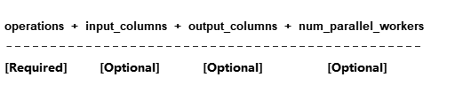
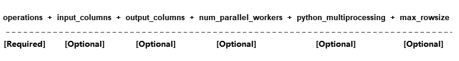

mindspore.dataset.Dataset.map
- Dataset.map(operations, input_columns=None, output_columns=None, column_order=None, num_parallel_workers=None, **kwargs)[source]
Apply each operation in operations to this dataset.
Each operation will be passed one or more columns from the dataset as input, and one or more columns will be outputted. The first operation will be passed the columns specified in input_columns as input. If there is more than one operation in operations, the outputted columns of the previous operation are used as the input columns for the next operation.
The columns outputted by the very last operation will be assigned names specified by output_columns , and if not specified, the column name of output column is same as that of input_columns .
If you use transformations ( vision transform , nlp transform , audio transform ) provided by mindspore dataset, please use the following parameters:
If you use user-defined transform as PyFunc (Python Func), please use the following parameters:

- Parameters
operations (Union[list[TensorOperation], list[functions]]) – List of operations to be applied on the dataset. Operations are applied in the order they appear in this list.
input_columns (Union[str, list[str]], optional) – List of the names of the columns that will be passed to the first operation as input. The size of this list must match the number of input columns expected by the first operation. Default:
None, the first operation will be passed however many columns that are required, starting from the first column.output_columns (Union[str, list[str]], optional) – List of names assigned to the columns outputted by the last operation. This parameter is mandatory if len(input_columns) != len(output_columns). The size of this list must match the number of output columns of the last operation. Default:
None, output columns will have the same name as the input columns, i.e., the columns will be replaced.num_parallel_workers (int, optional) – Number of threads used to process the dataset in parallel. Default:
None, the value from the configuration will be used.**kwargs –
python_multiprocessing (bool, optional): Parallelize Python operations with multiple worker processes. This option could be beneficial if the Python operation is computational heavy. Default:
False.max_rowsize (Union[int, list[int]], optional): Maximum size of row in MB that is used for shared memory allocation to copy data between processes, the total occupied shared memory will increase as
num_parallel_workersandmindspore.dataset.config.set_prefetch_size()increase. This is only used if python_multiprocessing is set to True. If it is an int value, it representsinput_columnsandoutput_columnsuse this value as the unit to create shared memory. If it is a list, the first element represents theinput_columnsuse this value as the unit to create shared memory, and the second element representsoutput_columnsuse this value as the unit to create shared memory. Default: 16.cache (DatasetCache, optional): Use tensor caching service to speed up dataset processing. Default:
None, which means no cache is used.callbacks (DSCallback, list[DSCallback], optional): List of Dataset callbacks to be called. Default:
None.offload (bool, optional): Flag to indicate whether offload is used. Default:
None.
Note
Input operations accepts TensorOperations defined in mindspore.dataset part, plus user-defined Python functions (PyFuncs).
Do not add network computing operators from mindspore.nn and mindspore.ops or others into this operations .
- Returns
Dataset, a new dataset with the above operation applied.
Examples
>>> import mindspore.dataset as ds >>> import mindspore.dataset.vision as vision >>> # dataset is an instance of Dataset which has 2 columns, "image" and "label". >>> # image is of type bytes type which can be decoded to RGB >>> # label is of type int32 >>> cifar10_dataset_dir = "/path/to/cifar10_dataset_directory" >>> dataset = ds.Cifar10Dataset(dataset_dir=cifar10_dataset_dir) >>> >>> # Define two operations, where each operation accepts 1 input column and outputs 1 column. >>> decode_op = vision.Decode(to_pil=False) >>> random_jitter_op = vision.RandomColorAdjust(brightness=(0.8, 0.8), contrast=(1, 1), ... saturation=(1, 1), hue=(0, 0)) >>> >>> # 1) Simple map example. >>> >>> # Apply decode_op on column "image". >>> dataset = dataset.map(operations=[decode_op], input_columns=["image"]) >>> >>> # Decode and rename column "image" to "decoded_image". >>> dataset = dataset.map(operations=[decode_op], input_columns=["image"], output_columns=["decoded_image"]) >>> >>> # A simple example for user defined python function transform. >>> dataset = ds.NumpySlicesDataset(data=[[0, 1, 2]], column_names=["data"]) >>> dataset = dataset.map(operations=[(lambda x: x - 1)], input_columns=["data"]) >>> >>> # 2) Map example with more than one operation. >>> >>> # Create a dataset where the images are decoded, then randomly color jittered. >>> # decode_op takes column "image" as input and outputs one column. The column >>> # outputted by decode_op is passed as input to random_jitter_op. >>> # random_jitter_op will output one column. Column "image" will be replaced by >>> # the column outputted by random_jitter_op (the very last operation). All other >>> # columns are unchanged. >>> dataset = dataset.map(operations=[decode_op, random_jitter_op], input_columns=["image"]) >>> >>> # Rename the column outputted by random_jitter_op to "image_mapped". >>> dataset = dataset.map(operations=[decode_op, random_jitter_op], input_columns=["image"], ... output_columns=["image_mapped"]) >>> >>> # Map with multiple operations using pyfunc and rename column's name >>> dataset = ds.NumpySlicesDataset(data=[[0, 1, 2]], column_names=["data"]) >>> dataset = dataset.map(operations=[(lambda x: x * x), (lambda x: x - 1)], input_columns=["data"], ... output_columns=["data_mapped"]) >>> >>> # 3) Example where number of input columns is not equal to number of output columns. >>> >>> # operations[0] is a lambda that takes 2 columns as input and outputs 3 columns. >>> # operations[1] is a lambda that takes 3 columns as input and outputs 1 column. >>> # operations[2] is a lambda that takes 1 column as input and outputs 4 columns. >>> # >>> # Note: The number of output columns of operation[i] must equal the number of >>> # input columns of operation[i+1]. Otherwise, this map call will also result >>> # in an error. >>> operations = [(lambda x, y: (x, x + y, x + y + 1)), ... (lambda x, y, z: x * y * z), ... (lambda x: (x % 2, x % 3, x % 5, x % 7))] >>> dataset = ds.NumpySlicesDataset(data=([[0, 1, 2]], [[3, 4, 5]]), column_names=["x", "y"]) >>> dataset = dataset.map(operations, input_columns=["x", "y"], ... output_columns=["mod2", "mod3", "mod5", "mod7"])